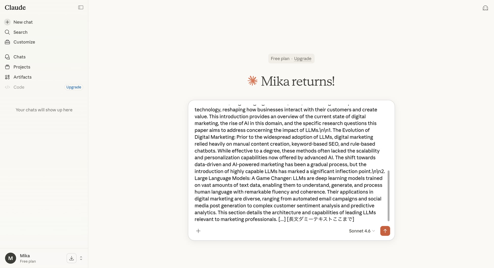
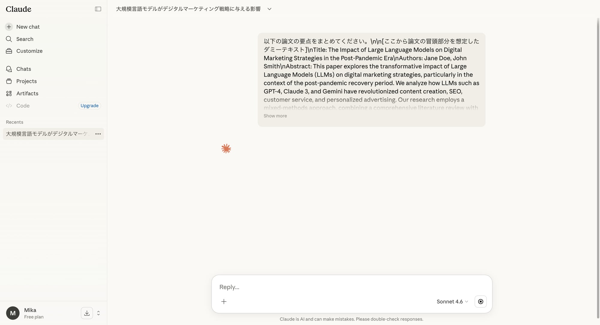
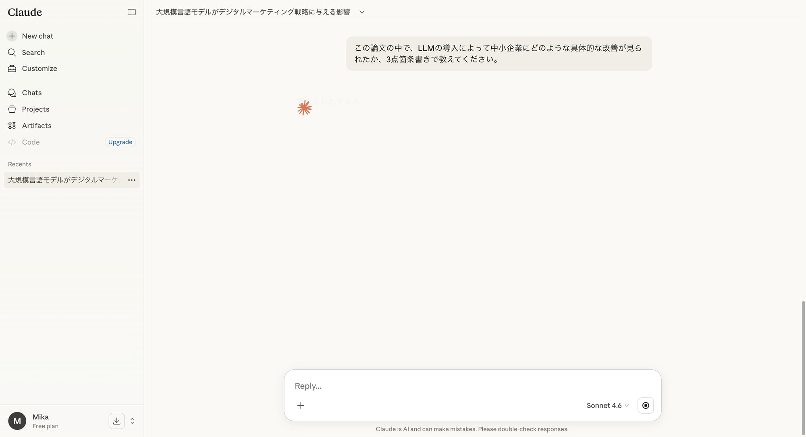

これまでの記事で、Claudeの基本的な特徴とプロンプトのコツを学び、AIチャットボットとの対話の基礎を固めてきました。
今回は、Claudeの最大の強みの一つである「圧倒的な長文読解能力」に焦点を当てます。論文、報告書、契約書、書籍など、どんなに長い資料でもClaudeに任せれば、瞬時にその内容を理解し、要約し、質問に答えてくれます。
「資料を読むのが苦手」「時間がないけど内容を把握したい」そんな悩みを抱えるあなたのために、Claudeを使った効率的な情報インプット術を実践的に解説します。
Claudeが長文に強い理由：広大なコンテキストウィンドウ
Claudeがなぜ長文処理に優れているのでしょうか？その秘密は、他のAIチャットボットと比較して圧倒的に広い「コンテキストウィンドウ」にあります。
コンテキストウィンドウとは、AIが一度に記憶し、処理できるテキストの量を指します。この窓が広ければ広いほど、AIは過去の会話やアップロードされた長い文書全体を考慮に入れて回答を生成できます。
例えるなら、ChatGPTが短期記憶に優れるのに対し、Claudeは長期記憶と全体像の把握に長けているイメージです。これにより、数百ページにわたるPDFファイルを丸ごと読み込ませても、文脈を見失うことなく、的確な要約や詳細な分析が可能です。

画像：Claudeの広大なコンテキストウィンドウに長文のプロンプトを貼り付けた例
論文・資料読解の3ステップ
Claudeを使って論文や資料を効率的に理解するプロセスは、大きく3つのステップに分けられます。
ステップ1：資料のアップロード
まずはClaudeのチャット画面で、対象となる資料をアップロードします。PDF、テキストファイル、Markdownファイルなど、さまざまな形式に対応しています。
- 「＋」ボタンをクリック： 入力ボックスの左側にあるファイルアップロードボタンをクリックします。
- ファイルを選択： PCから対象の資料ファイルを選択し、アップロードします。複数のファイルを一度にアップロードすることも可能です。
- プロンプトを入力： ファイルのアップロードが完了したら、次にAIにしてほしいことをプロンプトで指示します。
ステップ2：全体像の把握（要約とキーポイント抽出）
資料の全体像を素早く把握するために、まずは要約とキーポイントの抽出を依頼しましょう。
- プロンプト例：
- 「このPDF資料を読んで、主要な結論と重要な発見を5点箇条書きでまとめてください。」
- 「この論文の目的、研究方法、結果、考察をそれぞれ簡潔に要約してください。」
- 「添付された契約書の最も重要な条項（3つ）とその意味を分かりやすく説明してください。」
これにより、資料全体を読まずとも、その骨子と核心部分を短時間で理解できます。

画像：Claudeが論文の要点をまとめた回答
ステップ3：詳細な質問と深掘り
全体像を把握した後は、あなたの知りたい情報に特化して質問を深掘りしていきましょう。Claudeは資料全体を記憶しているので、関連するどの部分についても正確に回答してくれます。
- プロンプト例：
- 「この資料の中で、「〇〇（特定のキーワード）」について言及されている箇所を全て抽出し、その内容を詳細に解説してください。」
- 「提案されているソリューションの具体的な実装ステップについて、資料の記述に基づいて教えてください。」
- 「筆者は、この問題に対してどのような解決策を提示していますか？また、その根拠となっているデータは何ですか？」
- 「この資料の内容と、私のこれまでの知識（〇〇）を比較して、新たな視点や矛盾点があれば指摘してください。」
Claudeは、まるで専門家と一緒に資料を読み解いているかのように、あなたの質問に対して的確かつ深い洞察を提供してくれます。

画像：Claudeが論文から特定の情報を抽出した回答
Claudeをさらに活用するヒント
- 複雑な資料の比較： 複数の類似資料をアップロードし、「これらの資料の共通点と相違点を比較して、表形式でまとめてください。」と指示すれば、比較分析も一瞬です。
- Q&Aセッションの自動化： 長大なFAQドキュメントをアップロードし、「ユーザーからの質問に対して、このドキュメントに基づいて回答を生成してください。」と指示すれば、顧客サポートの初動対応ツールとしても活用できます。
- 専門用語の解説： 不慣れな分野の資料を読む際、分からない専門用語が出てきたら、「この資料に出てくる「〇〇」という専門用語について、初心者にも分かるように解説してください。」と質問すれば、その場で理解を深められます。
まとめと次回予告
今回はClaudeの真骨頂である長文読解能力を最大限に活用し、論文や資料を効率的に理解するための実践的な方法を学びました。広大なコンテキストウィンドウを活かし、資料のアップロードから要約、詳細な質問、深掘りまでの一連の流れをマスターすることで、情報収集と知識獲得のスピードが劇的に向上するでしょう。
次回は「**Claudeの画像理解力：図やグラフからインサイトを抽出する！**」と題して、Claudeがどのように画像や図表を理解し、そこから情報を読み取るかを探ります。ビジネスレポートのグラフ分析や、プレゼン資料の作成に役立つヒントが満載です。
#Claude #AIツール #長文読解 #要約 #論文 #資料分析